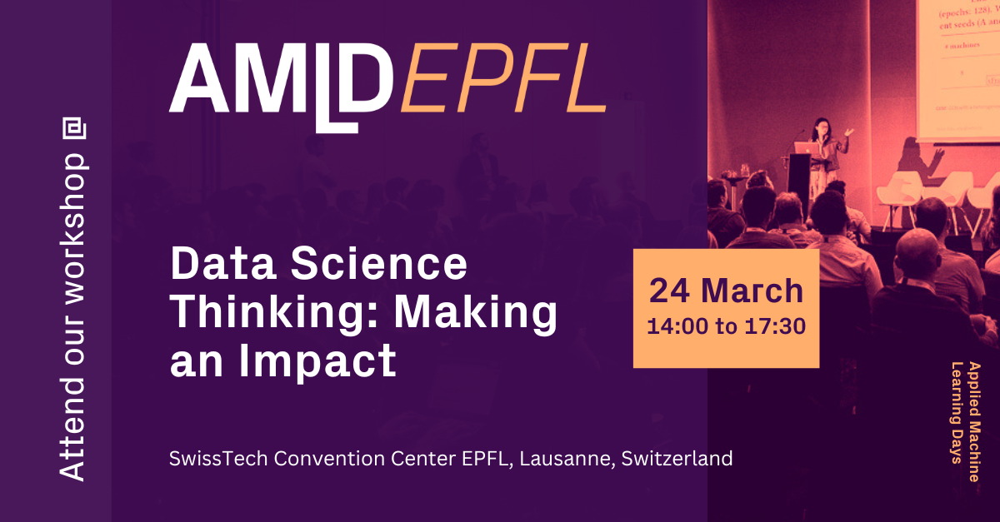
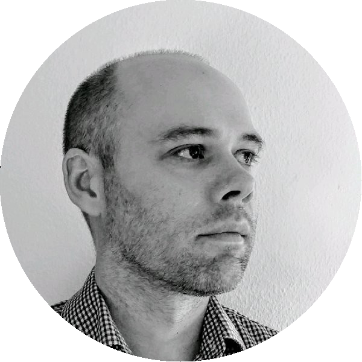

Data science thinking: making an impact
24th of March @ AMLD 2024

Registration
- Registration: Sign up here
Time / Location
- Date/Time: 14.00 - 17.30, 24th March 2024
- Room: Garden 1BC
- Event: AMLD 2024,
- Location: SwissTech Convention Center (STCC), EPFL, Lausanne, Switzerland
Workshop description
The value of data science is the promise of extracting value from data (Blei and Smyth 2017). Enabled by advances in technology, engineering, and the quantitative sciences, data science is reshaping many sectors. However, with the promise of data science there comes many challenges, especially if the hope is to live up to the hype and deliver meaningful impact.
The data science thinking workshop is aimed to equip participants with the knowledge needed to understand how data science can be used to transform the way we work, and to develop skills that will help them to translate scientific and business problems into data science projects that have impact.
This workshop is designed as follows. First there will be an introduction into data science building towards the importance of data science thinking: a set of essential practices for the modern data scientist. The subsequent four modules focus on the individual steps of the proposed data science thinking workflow:
- Getting the Questions Right: teaches how to elicit and understand a business problem and translate it into an actionable data science project.
- Building and Executing a Data Strategy: focuses on building a data strategy, including the conduct of an inventory of available data and, if needed, collection of additional data.
- Building and Executing an Analysis Strategy: discusses aspects around the development and execution of a solution strategy, by building or customizing appropriate statistical, mechanistic and/or machine learning models.
- Evaluating and Communicating Results: provides insights on the evaluation, contextualize, and communicate the project outcomes and deliverables.
Each step will be introduced with motivating examples and be accompanied with hands-on exercises to help develop an understanding and being to develop these learnings to their day-to-day work. The course will be hands-on and fun, with lots of discussion and interaction.
Facilitators
Kostas Sechidis is an Associate Director of Data Science in Advanced Methodology and Data Science group of Novartis. His main areas of interest are machine learning based biomarker discovery, subgroup identification, and development of digital endpoints. He is a honorary research fellow in Machine Learning and Robotics within the Department of Computer Science in the University of Manchester,a member of the editorial board of Machine Learning Journal (MLJ) and vice-chair of the technical committee on Statistical Pattern Recognition Techniques of the International Association for Pattern Recognition (IAPR). More information about his work can be found here.

Mark Baillie is a member of the Advanced Methodology and Data Science group at Novartis. He focuses on methodology to support drug development, working on a variety of internal and external initiatives to improve the reporting of clinical trials. These include effective visual communication, initial data analysis, DMC reporting, analysis results standards, and data challenges. Mark is a member of the Stratos initiative and the PSI visualisation special interest group.
Frank Bretz is a Distinguished Quantitative Research Scientist at Novartis. He has supported the methodological development in various areas of pharmaceutical statistics, including dose finding, estimands, multiple comparisons, and adaptive designs. Frank is an Adjunct Professor at the Hannover Medical School (Germany) and the Medical University Vienna (Austria). Frank is a Fellow of the American Statistical Association.
Prasanti Goswami works with Novartis’ Development Learning team as a Capability Building Lead helping with all upskilling needs linked to Data and Analytics. She partners with SMEs (like Frank, Kostas and Mark) to upskill team members to meet organization’s skill or behaviour goals. She uses learning design and adult learning theories while developing impactful learning solutions. She has done her Masters in Linguistics from The English and Foreign Languages’ University, Hyderabad.
Acknowledgements
Special thanks to:
- Conor Moloney
- Carsten Philipp Mueller
- Malika Cremer
- Peter Krusche
- Björn Holzhauer
- Janice Branson
- David Ohlssen